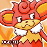
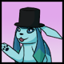

I awake with a start in the middle of the night, trying to remember the dream I just had.
"What the heck? Was I dreaming I was trapped in a toaster?"
Just then I get an email on my phone saying I'm needed in Ohio, first thing in the morning, but with no sender indicated.
"Who-?"
Another email pops up with the message "Oh I forgot to mention, welcome back to the interviewing team."
"O, well then. I guess. I'm unemployed at the moment anyhow, I suppose."
The next morning I find myself in the forgotten and mysterious land of Ohio outside a house peculiarly shaped like a loaf of bread. I ring the doorbell and am greeted by a gentlemen wearing loafers. He invites me into the living room. I look around to make sure that there aren't any other bread jokes to be made and I begin the interview.
OK, let's start with who you are and what you do in real life.
Well, my real name is Matt and I'm a web programmer.
Now, when you say web programmer, what does that normally entail?
I create websites from start to finish. I have at least a little artistic talent so I come up with a design and write the presentation code that you're used to seeing around here. I also work on the server side to create all of those things that you don't see but are crucial for a large website to function.
Tell me a bit about you personally. What do you like to do outside of the internet?
There's a world outside of the internet? Haha.
The abundance of long-dead computers stacked in the corner of the room begins to make sense.
Sometimes I feel like there isn't. For some reason I like to stay busy, but I also like to complain about being too busy. I have a puppy to spend a lot of time with. She's going through agility training. And a house to work on. My personality offline is pretty much the same. I try to present myself as exactly who I am and nothing else.
Hey, me too. :>
I'd really like to see you make that face, then. :P
9.9 Anybody special in your life aside from the puppy?
Indeed. I've actually been married for about a year now. We've been together for.. like 6 and a half, I think?
oooo.
Images of Toast being buttered by his wife flash in my head.
People probably think I'm the stereotypical nerd sitting at a computer, and I might be, but I'm at least not stuck in my parents' basement.
Lol. Is there anything else you nerd about apart from Pokemon?
I do love video games in general. Really, technology in general. I was one of those people that walked through Best Buy just to look at the new computers. Not the Apple ones though; those are the devil.
It seems like we can't get out of the grocery aisle with these jokes. (Yes I know he meant computers you dumbs.)
There's also some of the traditional nerd shows like Doctor Who. I've never been able to watch old shows, though, so there's a lot of people who would deny me the title of TV nerd.
So, shifting gears, what brought you to Smogon?
That's a bit of a long story. The short version is that I reeeaaally wanted a shiny Charizard. The less short version is that I learned RNG to get it. Decided that I wasn't happy with the performance I was getting out of the tools for it. So I made my own, was referred to Smogon (shoutout to Age of Kings, who was a Bulbagarden mod at the time) for an audience to check it out. I got pulled into RNG research just in time for 5th gen. And once you go on IRC, you never really leave.
What was the tool you made for RNG?
Originally ZomgTimer. Cheesy? Yes. I thought it was hilarious at the time, though. I later made a better version called EonTimer, named for the Glaceon that decorates it.
So how did you make the jump from making a timer to leading The Smog?
I got kinda bored a while back and started looking for things to do around here. Someone mentioned that The Smog might need some HTML help, so I did the whole evaluation thing and sent it off to Setsuna. 2 months later he replied and asked if I wanted to join the staff. I guess at the time it was rare to have someone with enough HTML and CSS skill to really build things.
"Rare might be an understatement," I mutter to myself.
What's kept you around Smogon? You're now not only leading The Smog but you've also become a member of Senior Staff.
There's been plenty of times I've thought about leaving. I stick around for the friends I've made here and the occasional challenge that I find. I really like to help people, so I guess that's part of it too. I am just terrible at telling people no.
Lol. Alright, now for the question everyone's burning to know: why the name Toast(+1)?
Well, I've always been really bad at choosing usernames. On the off chance I found one that I liked, it was taken, of course. So I was signing up for.. something.. I'm not sure what, and just picked the first word that came to mind. "Toast" was taken, as you'd expect. It suggested adding numbers so I did it with words to make a name that I knew no one else would have. I was able to carry that across sites pretty easily. Later down the road, I had a chance to change my username to its current form. It seemed a little more appropriate to my personality.
Still doesn't explain why toast precisely, but I imagine it has to do with him being crusty yet wholesome. And then the +1 being his wife.
And now the question we ask everyone: what's your favorite Pokemon?
I've never been a "favorites" kind of guy since my answer changes almost daily. Articuno is a really old favorite, as is Lapras. I usually just go with Glaceon, though, since it's both an Eeveelution and an Ice-type.
What is it about Ice-types that you like so much?
It seems to be a design thing. I like cooler colors and Ice just has a very refreshing feel to it. It's a real bummer that they're weak to pretty much everything. Seriously, Rock? Fighting? Steel? What the hell is that?
And with that, I praise Jesus it's still summer. As I leave, Toast's wife hands me a stack of different flavored jellies and gives me a wink before saying goodbye and closing the door. Not totally sure what she meant by that, but the jelly was good.
{kind=link}